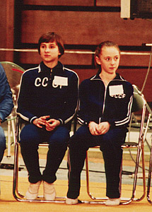

Natalia Ilienko (USSR)
1981 World FX Champion

Elena Polevaya (left) and
Natalia Ilienko.
Medal Total
- World Championships: 3
Gold
- European Championships: 1
Silver
Natalia was born on March 26,
1967 in Alma Ata. She was coached by Yuri and Natalia Tsapenko at
Dinamo. Natalia is married to Gary Jarvis, an aerobics coach in England,
and competes in this discipline. They have a son, Maxim, who was born in
April 2001.
Competition Results
- 1979
- Catania Cup: 6th AA
- Chunichi Cup: 3rd AA
- Coca-Cola International: 6th AA, 2nd FX
- Dinamo Spartakiade: 1st Team, 2nd AA, 1st FX
- Junior Friendship Tournament (Druzhba): 1st Team, 1st AA,
1st B, 1st FX, 2nd UB
Riga International: 6th AA
Tokyo Cup: 1st FX, 2nd B
- USSR Spartakiade: 24th AA
-
- 1980
- Coca-Cola International: 2nd FX
Jr. European Championships: 6th AA, 7th FX, 8th B
- USSR Championships: 7th AA, 1st UB, 4th
B, 4th FX, 6th V
- USSR Cup: 8th AA
-
- 1981
- European Championships: 4th AA, 2nd B,
4th UB
- Milan Grand Prix: 8th AA
- Moscow News: 2nd AA, 1st B, 2nd V, 2nd
UB, 2nd FX
Schoolchildren's Spartakiade: 5th Team, 1st AA, 1st UB, 1st B, 3rd FX
USSR Championships: 11th AA, 1st B, 5th FX
- World Championships: 1st Team, 1st FX
-
- 1982
- All-Union Youth Sports Games: 1st Team, 3rd AA, 2nd V, 3rd UB
- Milan Grand Prix: 1st AA, 1st UB, 1st B, 1st FX
USSR Championships: 8th (prelims)
- USSR Cup: 5th prelims
- World Cup: 7th AA
-
- 1983
- Riga International: 4th AA, 1st B
-
USSR Cup: 19th AA, 2nd B, 3rd UB, 5th FX
USSR Spartakiade: 2nd AA, 2nd B, 4th FX
- World Championships: 1st Team
-
- 1984
- CSSR Spartakiade (Olomouc): 1st Team, 4th B, 5th UB
- USSR Championships: 1st AA, 1st B, 3rd
UB, 3rd FX, 7th V
USSR Cup: 5th AA, 1st UB, 4th B
-
- 1999
- Dutch Open Sports Aerobics Championships: 7th AA
This page was last updated on February 15, 2026.
© Gymn Forum